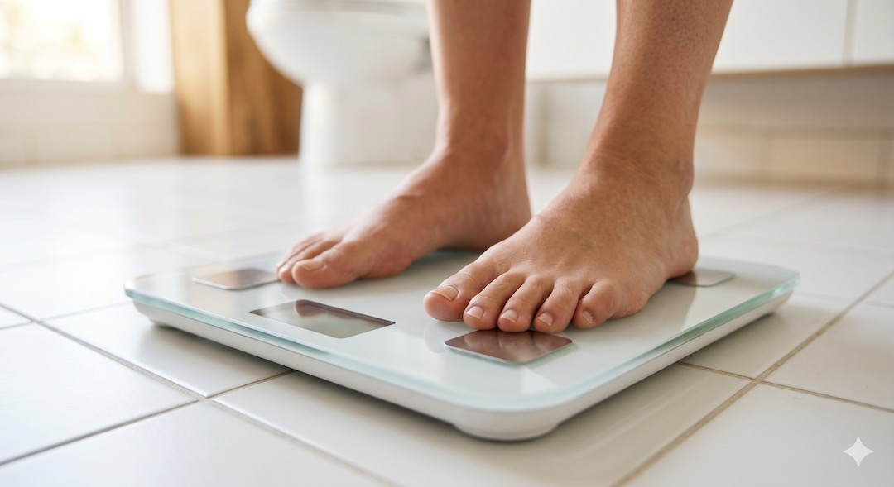
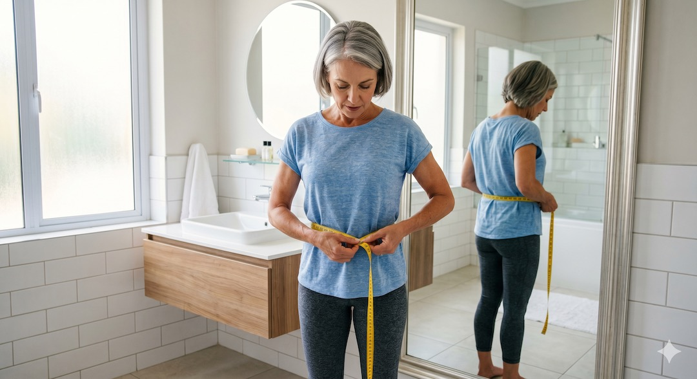
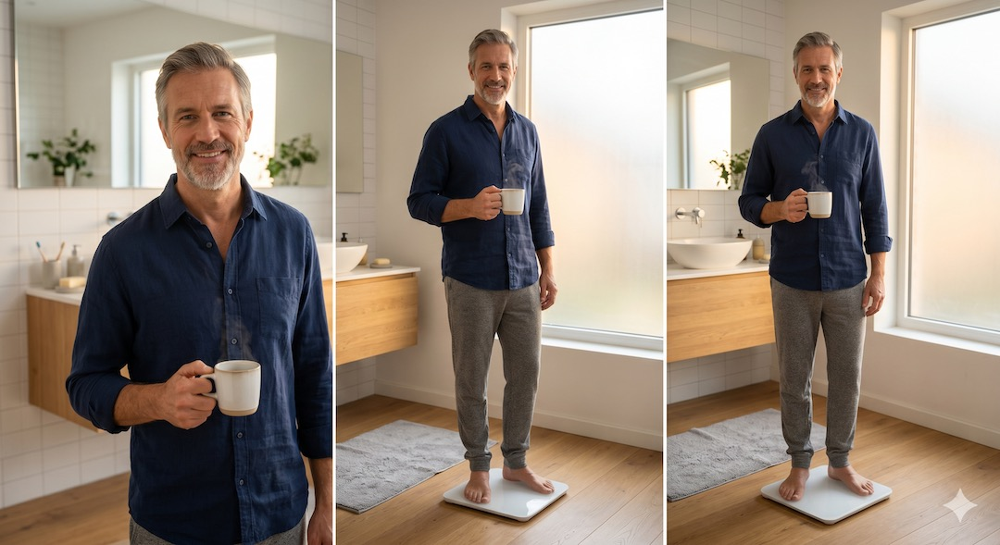
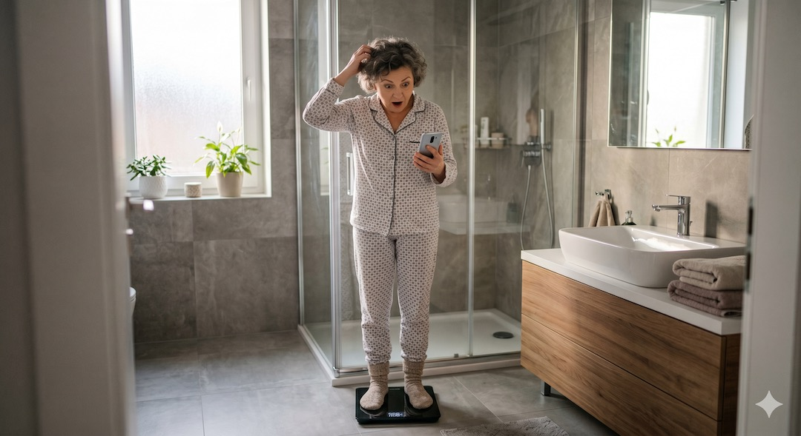

Nowoczesne wagi łazienkowe obiecują kompletną analizę składu ciała w kilka sekund, przesyłając na smartfon dane o tłuszczu trzewnym, masie mięśniowej czy nawodnieniu. Choć technologia BIA, na której się opierają, jest fascynująca, warto wiedzieć, że większość tych wyników to jedynie statystyczne szacunki oparte na algorytmach, a nie bezpośrednie pomiary Twoich tkanek. Dla osoby po 50. roku życia zrozumienie, którym liczbom można ufać, a które traktować jedynie jako ogólny trend, jest kluczowe dla mądrego zarządzania zdrowiem i unikania niepotrzebnego stresu wynikającego z codziennych wahań na wyświetlaczu.
Szybka odpowiedź
Waga smart może pomagać w obserwacji trendu, ale jej pojedynczy pomiar tkanki tłuszczowej, wody czy wieku metabolicznego bywa mocno niedokładny. Po 50-tce traktuj ją jak notatnik, nie diagnozę. Jeśli wynik skacze z dnia na dzień, ważniejsze są średnia z kilku tygodni, obwód pasa i siła.
Kluczowe wnioski
Kluczowe wnioski
- Waga smart mierzy masę ciała z precyzją do 0,3 kg, ale tkankę tłuszczową jedynie szacuje.
- Technologia BIA jest niezwykle czuła na poziom nawodnienia, co może fałszować wyniki w ciągu dnia.
- Pomiar tłuszczu trzewnego w wagach domowych ma jedynie 49% korelacji z profesjonalnym badaniem MRI.
- Najlepszym sposobem na używanie wagi smart jest śledzenie trendu długoterminowego, a nie pojedynczych odczytów.
| Parametr | Co robi urządzenie | Jak używać wyniku |
|---|---|---|
| Masa ciała | Mierzy nacisk na czujniki | Śledź średnią z pomiarów w podobnych warunkach |
| Tkanka tłuszczowa | Szacuje z impedancji i danych użytkownika | Porównuj trend tylko na tym samym urządzeniu |
| Masa mięśniowa | Wylicza pośrednio | Łącz z obwodami, siłą i funkcją |
| Tłuszcz trzewny | Szacuje algorytmem producenta | Nie traktuj jako diagnozy; mierz obwód pasa |
| Masa kości / wiek metaboliczny | Wylicza statystycznie | Nie służy do rozpoznania osteoporozy ani wieku biologicznego |
Jak działa technologia BIA w Twojej wadze łazienkowej?
Technologia BIA (Bioelectrical Impedance Analysis), stosowana w wagach smart, polega na przepuszczaniu przez ciało słabego, niewyczuwalnego impulsu elektrycznego, który mierzy opór tkanek. Ponieważ mięśnie zawierają dużo wody i dobrze przewodzą prąd, a tkanka tłuszczowa stawia mu opór, urządzenie jest w stanie oszacować proporcje składników Twojego ciała.
Należy jednak pamiętać, że wagi domowe posiadają elektrody tylko pod stopami, co oznacza, że impuls prądu zamyka się głównie w dolnej partii ciała, a wyniki dla tułowia są jedynie wyliczane przez wzory matematyczne.
Większość wag łazienkowych wysyła sygnał jedną nogą w górę i drugą w dół. Nie dociera on bezpośrednio do jamy brzusznej, gdzie znajduje się najgroźniejszy tłuszcz trzewny. Droższe modele z ośmioma elektrodami (posiadające dodatkowy uchwyt dla rąk) są znacznie dokładniejsze, ponieważ mierzą impedancję całego ciała. Dla osoby po 50. roku życia, u której skład ciała zmienia się naturalnie z wiekiem, warto wybierać urządzenia oparte na jak najnowszych algorytmach. Więcej o technologii i biologii wieku znajdziesz w naszych poradnikach.
Wniosek praktyczny: Traktuj smart wagę jako urządzenie do szacowania kierunku zmian, a nie jako precyzyjne narzędzie laboratoryjne.
- BIA mierzy opór elektryczny (impedancję) wody w Twoich tkankach.
- Tkanka tłuszczowa izoluje prąd, a mięśnie go przewodzą.
- Modele z elektrodami w stopach „zgadują” skład Twojego tułowia.
- Wagi z uchwytem ręcznym dają wynik o ok. 20-30% bliższy prawdzie.

Masa ciała, tłuszcz i mięśnie: Co waga mierzy naprawdę dobrze?
Wagi smart najlepiej radzą sobie z pomiarem całkowitej masy ciała, gdzie błąd pomiaru względem standardów medycznych wynosi zazwyczaj mniej niż 0,3 kg. Jeśli jednak chodzi o procent tkanki tłuszczowej, badania wykazują, że domowe urządzenia systematycznie zaniżają ten wynik o około 2 do 4 kilogramów w porównaniu do profesjonalnego badania DEXA.
Błąd nie ma stałego kierunku ani wielkości dla każdego użytkownika. Wynik 25% nie daje podstaw, by automatycznie dodać kilka punktów procentowych. Porównuj pomiary na tym samym urządzeniu, a gdy potrzebna jest ocena kliniczna, użyj metody dobranej przez specjalistę.
Podobnie sytuacja wygląda z masą mięśniową – wagi nie widzą mięśni bezpośrednio, lecz obliczają je metodą odejmowania szacowanego tłuszczu od masy całkowitej. Jeśli waga zaniży Twój tłuszcz, automatycznie „przypisze” te kilogramy do mięśni, dając Ci fałszywe poczucie bezpieczeństwa. Monitorowanie zdrowia po 50-tce wymaga świadomości tych różnic, aby nie popaść w pułapkę optymistycznych, ale nieprawdziwych danych z aplikacji.
Wniosek praktyczny: Zaufaj wadze w kwestii kilogramów, ale procent tłuszczu traktuj jako orientacyjny przedział, do którego należy doliczyć „margines błędu”.
- Masa całkowita: bardzo wysoka precyzja (do 0,3 kg).
- Tkanka tłuszczowa: tendencja do niedoszacowania o ok. 10-15%.
- Masa mięśniowa: wyliczana pośrednio, często zawyżona.
- Porównuj wyniki rano, przed jakimkolwiek posiłkiem.
Tłuszcz trzewny: Dlaczego Twoja waga może Cię oszukiwać?
Wskaźnik tłuszczu trzewnego w wadze domowej jest estymacją zależną od algorytmu producenta, a nie obrazowaniem jamy brzusznej. Pojedynczy współczynnik korelacji nie oznacza, że urządzenie „trafia w połowie przypadków”. Wynik może pomagać śledzić trend, ale nie rozpoznaje ryzyka metabolicznego.
Liczba, którą widzisz w aplikacji (np. „poziom 9”), to czysta estymacja algorytmu oparta na Twoim wieku, płci i wadze ogólnej.
Zjawisko to jest szczególnie niebezpieczne dla osób o sylwetce typu TOFI (szczupły na zewnątrz, tłusty w środku), u których waga może pokazywać niski poziom tłuszczu, podczas gdy ich narządy są otoczone niebezpieczną tkanką VAT. Tłuszcz trzewny i jego ryzyka to temat, który warto zweryfikować za pomocą centymetra krawieckiego – jeśli Twój obwód talii przekracza 102 cm (mężczyźni) lub 88 cm (kobiety), ryzyko metaboliczne jest wysokie, bez względu na to, co mówi Twoja waga smart.
Wniosek praktyczny: Nigdy nie polegaj na wadze smart w ocenie tłuszczu trzewnego. Używaj centymetra krawieckiego – jest darmowy i znacznie dokładniejszy.
- Waga nie widzi Twojego brzucha – ona go „zgaduje” ze statystyki.
- Błąd pomiaru tłuszczu trzewnego może wynosić nawet 40%.
- Osoby szczupłe często mają niedoszacowany VAT w aplikacji.
- Złoty standard oceny to MRI, DEXA lub obwód talii.

Nawodnienie: Cichy sabotażysta Twoich wyników na wadze smart?
Nawodnienie to parametr, na który technologia BIA jest najbardziej czuła, co paradoksalnie czyni inne wyniki (jak tłuszcz czy mięśnie) mniej wiarygodnymi w ciągu dnia. Ponieważ waga mierzy opór elektryczny wody, każda zmiana jej ilości w Twoim organizmie – po wypiciu szklanki herbaty, gorącej kąpieli czy treningu – dramatycznie zmienia przewodność Twojego ciała.
Może to spowodować nagły skok lub spadek wyniku tkanki tłuszczowej o kilka punktóws procentowych, mimo że Twoja masa tłuszczowa nie zmieniła się ani o gram. To samo zjawisko.
Wiele osób po 50-tce czuje frustrację, widząc rano 28% tłuszczu, a wieczorem 25%. To nie jest efekt „spalenia” tłuszczu w ciągu dnia, lecz jedynie zmiana nawodnienia tkanek i przewodności prądu. Aby wyniki były w ogóle porównywalne, musisz zachować rygorystyczny protokół: ważyć się zawsze o tej samej porze, najlepiej rano, na czczo i przed wypiciem jakichkolwiek płynów. Jak dbać o nawodnienie dowiesz się z naszych poradników medycznych.
Wniosek praktyczny: Waż się rano, po toalecie, ale przed wypiciem pierwszej szklanki wody. Tylko wtedy wyniki mają szansę być spójne.
- Więcej wody w organizmie = niższy (fałszywy) wynik tkanki tłuszczowej.
- Sól w kolacji zatrzymuje wodą i całkowicie zmienia ranny pomiar BIA.
- Gorąca kąpiel rozszerza naczynia i fałszuje przewodność prądu.
- Pomiary wieczorne są zazwyczaj bezużyteczne do śledzenia trendów.

Masa kości i BMI: Dlaczego waga liczy, a nie mierzy?
Wskaźniki takie jak masa kości oraz BMI są w wagach łazienkowych wynikiem czystych obliczeń matematycznych, a nie bezpośredniego pomiaru tkanek przez impuls elektryczny. BMI (Body Mass Index) to prosty wzór dzielący Twoją masę przez wzrost do kwadratu, który nie odróżnia mięśni od tłuszczu – dlatego dla osoby aktywnej po 50-tce może być bardzo mylący.
Z kolei masa kości jest szacowana na podstawie Twojej wagi całkowitej i płci, co nie daje żadnej informacji o ich gęstości czy ryzyku osteoporozy. Przy interpretacji.
Dla kobiet po menopauzie, u których ryzyko utraty gęstości kostnej rośnie, poleganie na liczbie „masa kości” z aplikacji smart wagi jest błędem. Prawdziwą diagnostykę osteoporozy umożliwia jedynie badanie densytometryczne (DXA) w przychodni. Waga smart może pokazać stałą masę kości, podczas gdy ich jakość i mineralizacja mogą spadać. Zdrowe kości po 50-tce wymagają profesjonalnych badań, a nie tylko domowej wagi.
Wniosek praktyczny: Traktuj „masę kości” w aplikacji jako ciekawostkę statystyczną. Jeśli martwisz się o osteoporozę, poproś lekarza o skierowanie na densytometrię.
- BMI to statystyka z XIX wieku – nie uwzględnia składu Twojego ciała.
- Masa kości w aplikacji to wzór statystyczny, a nie wynik skanowania.
- Waga nie wykryje osteoporozy ani zmian w gęstości mineralnej.
- Dla sportowców po 50-tce BMI prawie zawsze wskazuje nadwagę (błędnie).

Jak używać wagi smart mądrze? Zasada 30 pomiarów?
Największą wartością wagi smart jest powtarzalny pomiar masy ciała i obserwacja trendu. Nie ma naukowej zasady wymagającej dokładnie 30 odczytów. Wystarczy stała pora, twarde podłoże i ocena średniej z kilku pomiarów, bez reagowania na każdy dzienny skok.
Dla osób po 50. roku życia smart waga może być świetnym narzędziem motywacyjnym, o ile nie staje się źródłem obsesji. Jeśli Twoje wyniki „skaczą” z dnia na dzień, zignoruj to i patrz na średnią z całego miesiąca. Jeśli chcesz jednorazowego, rzetelnego pomiaru składu ciała, który będzie Twoim punktem zero, raz w roku wykonaj badanie DEXA. Dopasuj aktywność do realnych potrzeb swojego ciała, a nie tylko do cyferek na ekranie.
Wniosek praktyczny: Skup się na średniej tygodniowej, a nie na tym, co waga pokazała dzisiaj rano. Trend to jedyna informacja, która ma znaczenie.
- Ustaw wagę na twardym, równym podłożu (nigdy na dywanie!).
- Wykonaj serię pomiarów – trend jest ważniejszy niż punkt.
- Zignoruj wahania +/- 2% tłuszczu w skali tygodnia.
- Raz w roku zrób badanie DEXA jako profesjonalny „przegląd techniczny”.
Najczęściej zadawane pytania
Najczęściej zadawane pytania
Czy waga smart może zastąpić badanie DEXA?
Zdecydowanie nie. DEXA to złoty standard medyczny wykorzystujący niską dawkę promieniowania do precyzyjnego rozróżnienia tkanek. Waga smart jedynie szacuje te dane na podstawie oporu elektrycznego. Waga nadaje się do śledzenia trendów w domu, ale DEXA jest niezbędna do rzetelnej diagnozy medycznej.
Dlaczego procent tłuszczu skacze po treningu?
Podczas treningu tracisz wodę z potem i zmieniasz ukrwienie mięśni. Ponieważ waga smart mierzy opór elektryczny wody, jej mniejsza ilość powoduje błędny odczyt wyższego procentu tłuszczu. Nigdy nie ważą się bezpośrednio po wysiłku fizycznym.
Czy waga smart jest bezpieczna dla osób z rozrusznikiem?
Większość producentów kategorycznie odradza używanie funkcji pomiaru składu ciała (BIA) osobom z wszczepionymi urządzeniami medycznymi (rozruszniki, defibrylatory). Impuls elektryczny może teoretycznie zakłócić ich pracę. Takie osoby powinny używać wagi wyłącznie w trybie pomiaru samej masy ciała.
Mój poziom tłuszczu trzewnego w aplikacji to '9'. Czy to dużo?
Skale w aplikacjach (np. 1-20) są umowne i zależą od producenta. Poziom 9 zazwyczaj mieści się w normie, ale pamiętaj, że to tylko szacunek algorytmu. Jeśli Twój obwód talii przekracza 102 cm (mężczyźni) lub 88 cm (kobiety), masz powód do działania, bez względu na wynik w aplikacji.
Obwód pasa, tłuszcz trzewny, kortyzol i nawyki wspierające metabolizm omawiamy szerzej w Centrum Metabolizmu i Brzucha po 50-tce.
Źródła
- JMIR Mhealth Uhealth: Accuracy of Smart Scales vs DEXA, 2021
- Frontiers in Endocrinology: BIA vs MRI in visceral fat assessment, 2023
- The Whole Health Practice: Smart Scales Accuracy Review, 2024
- UK Biobank: Body composition analysis in 4500 participants, 2023
- PMC: Accuracy of Bioelectrical Impedance Analysis, 2021
- BodySpec: Smart Scale Guide and DEXA comparison, 2024
Uwaga: Artykuł ma charakter informacyjny i edukacyjny. Nie zastępuje konsultacji lekarskiej, diagnozy ani leczenia.